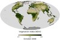

vegetation

Definition: Vegetation is an assemblage of plant species and the ground cover they provide. It is a general term, without specific reference to particular taxa, life forms, structure, spatial extent, or any other specific botanical or geographic characteristics. It is broader than the term flora which refers to species composition. Perhaps the closest synonym is plant community, but vegetation can, and often does, refer to a wider range of spatial scales than that term does, including scales as large as the global. Primeval redwood forests, coastal mangrove stands, sphagnum bogs, desert soil crusts, roadside weed patches, wheat fields, cultivated gardens and lawns; all are encompassed by the term vegetation.
Source: Wikipedia
Wikipedia Page (Something wrong with this association? Let us know.)
Wikidata Page (Something wrong with this association? Let us know.)